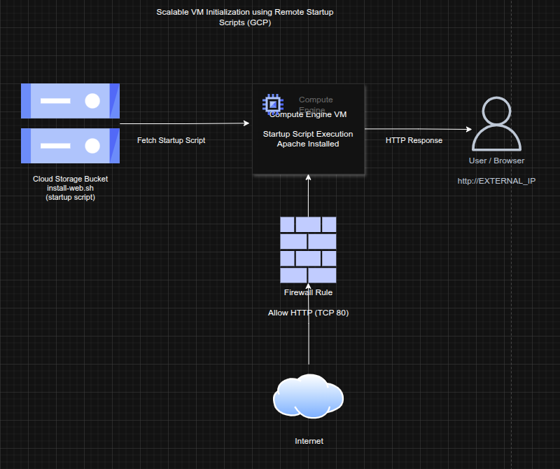

Scalable VM Initialization using Remote Startup Scripts on GCP
Scalable VM Initialization using Remote Startup Scripts on GCP
Timeline: December 2025
Role: Cloud Engineer / Infrastructure Engineer
Skills: Google Cloud Storage, Compute Engine, Startup Scripts, IAM, Firewall Rules, Linux, Apache
Project Summary
This project focused on designing a scalable and maintainable virtual machine initialization pattern on Google Cloud Platform (GCP) using remote startup scripts stored in Cloud Storage.
Instead of embedding startup scripts directly into instance metadata, the solution centralized configuration logic in a storage bucket. This approach improves reusability, maintainability, and consistency across multiple compute instances.
Objectives
- Centralize VM startup scripts in Cloud Storage
- Automate instance initialization using remote scripts
- Ensure secure access between VM and storage resources
- Enable HTTP access to validate successful deployment
- Implement firewall rules to expose web service
Architecture Overview
The architecture consists of:
- A Cloud Storage bucket storing the startup script
- A Compute Engine VM configured to execute the script at boot
- A startup script reference pointing to the storage location
- A firewall rule allowing HTTP traffic (TCP 80)
- A publicly accessible endpoint serving web content

Implementation & Highlights
1. Centralized Script Storage
- Created a Cloud Storage bucket
- Stored the startup script remotely (
install-web.sh) - Enabled centralized management of initialization logic
2. Automated VM Provisioning
- Created a Linux Compute Engine instance
- Configured instance metadata to reference the remote script
- Enabled automatic execution of the script during VM startup
3. Secure Access Configuration
- Ensured the VM had permission to access the storage bucket
- Verified proper interaction between Compute Engine and Cloud Storage
4. Network Exposure via Firewall
- Created a firewall rule allowing TCP port 80 (HTTP)
- Enabled external access to the web server
5. Deployment Validation
- Verified Apache installation via browser
- Accessed the application using the VM’s external IP
- Confirmed successful automated configuration
Design Decisions
- Decoupled configuration from infrastructure by storing scripts externally
- Enabled reusability across multiple VM deployments
- Reduced dependency on manual configuration steps
- Improved operational scalability for managing compute workloads
Results & Impact
- Achieved fully automated VM provisioning and configuration
- Demonstrated scalable initialization pattern for cloud environments
- Reduced operational overhead through centralized script management
- Enabled consistent and repeatable infrastructure deployments
Tools & Technologies Used
- Google Cloud Storage – Remote script storage
- Compute Engine – Virtual machine provisioning
- Startup Scripts – Automated initialization
- IAM & Permissions – Secure resource access
- Firewall Rules – HTTP access control
- Linux & Apache – Web server deployment
Outcome
This project demonstrates the ability to design scalable and automated infrastructure provisioning workflows using Google Cloud services. It highlights practical expertise in startup script automation, centralized configuration management, and cloud-native deployment patterns, which are essential for modern cloud engineering and platform operations.